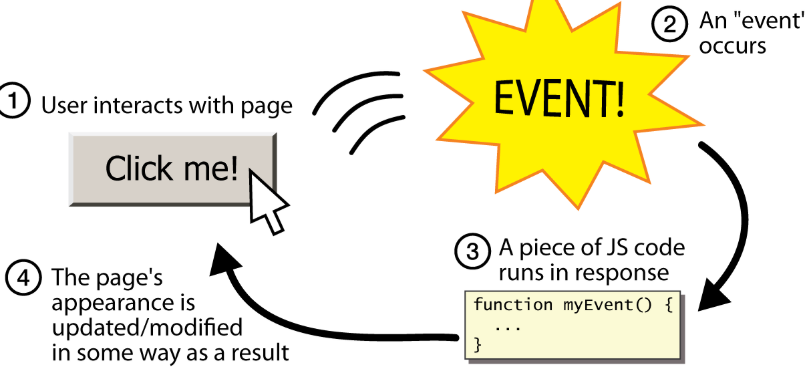
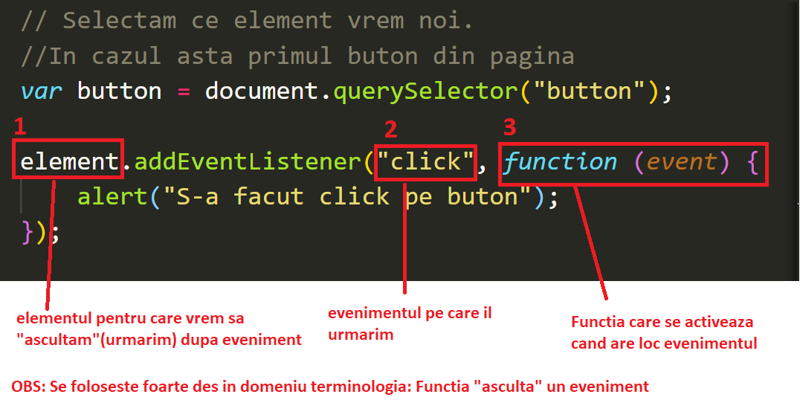

Laborator 6
Cuprins:
- Despre DOM(Document Object Model)
- Selectarea elementelor din pagina (elementele din DOM)
- Evenimente de browser (click,taste apasate etc)
- Manipularea elementelor din DOM
- Javascript Avansat: ES6 (l-am mutat in laboratorul 7 ca sa nu fie prea multa informatie acum)
- Tema :)
Anunt: PROIECTUL de HTML&CSS
Nu uitati de proiectul de HTML si CSS. Deadline-ul este 10 aprilie
Daca vreti sa primiti feedback pentru ce ati facut pana acum, va rog sa-mi trimiteti proiectele pana cel tarziu vineri, 3 aprilie
Cei care imi trimit proiectele pana pe 3 aprilie(inclusiv) o sa primeasca un punctaj provizoriu si o lista cu subiectele unde ati fost depunctati.(ca sa completati cu ce mai trebuie pana la deadline)
Daca imi trimiteti proiectele dupa data de 3 aprilie, o sa va trimit direct punctajul obtinut, dar nu mai puteti modifica acolo unde pierdeti puncte
Cerintele complete si un calculator pentru punctaj se gaseste aici: Proiect HTML + CSS
Despre DOM?
O sa folosim destul de des notiunea de "document" cand discutam de javascript. Va puteti gandi la "document" ca la un obiect JSON foarte mare, care contine toate elementele din pagina. (precum si alte date, ca de exemplu evenimentele de browser, adresa URL (locatia) pe care suntem etc)
Pentru niste explicatii mai detaliate, puteti sa cititi in cursul Curs 6
Sa consideram urmatorul exemplu

In partea stanga aveti codul HTML al unei pagini simple, iar in partea dreapta reprezentarea paginii in DOM
Orice browser se foloseste de acest obiect DOM ca sa stie cum sa afiseze codul HTML.
Dupa cum am invatat in laboratorul trecut, putem accesa proprietatile unui obiect folosind "." Ex: student.nume
Ca sa interactionam cu tag-urile noastre din body, o sa folosim document.body
Exercitiul 1

Creati o pagina HTML cu codul din imaginea de mai sus. Dupa ce ati creat pagina, legati un fisier javascript numit "my-javascript.js". In fisierul javascript, scrieti console.log(document.body) si deschide consola.
Cum arata obiectul document.body afisat in consola?
Observatie: Prima persoana care scrie raspunsul corect pe grupul de facebook are o steluta in plus la activitate. Va rog sa nu-mi trimiteti raspunsul in privat. Faceti pe grupul de facebook al laboratorului o postare cu cerinta si raspuns.
Selectarea elementelor din pagina
Scopul nostru este sa putem "manipula elementele din DOM". Asta inseamna ca vrem sa selectam de exemplu un anumit paragraf si sa-i modificam culoarea; Sau vrem sa selectam o anumita imagine si sa-i modificam dimensiunea; Sau vrem sa selectam toate elementele cu o anumita clasa si sa le stergem din pagina. Sau vrem sa selectam toate butoanele si sa adaugam o functie care face ceva la "click".
1. Selectarea elementelor dupa TAG : document.getElementsByTagName(tag)
// Selectarea tuturor paragrafelor
// Folosim document.getElementsByTagName("tag")
// primim inapoi un obiect de tip HTML.collection cu paragrafele din pagina
// obiectul este destul de similar cu un array,
var paragrafe = document.getElementsByTagName("p");
// Afisarea colectiei in consola.
console.log("paragrafele din pagina sunt: ",paragrafe);
// Accesarea primului paragraf:
paragrafe[0]
// Acesarea ultimuli paragraf:
paragrafe[paragrafe.length - 1]
Exista asemanari si deosebire intre HTML.colletion si array. Pentru noi, important este sa retinen:
- HTML.Collection este "live"(adica atunci cand stergem sau adaugam un element in pagina, colectia se actualizeaza automat. Exemplu practic: Am selectat toate paragrafele si mai adaugam un paragraf nou in pagina. Colectia o sa contina acest paragraf nou adaugat.
- Nu avem aceleasi metode pe care le aveam pe un array obisnuit. O sa intelegem mai bine diferenta in laboratoarele urmatoare
- La fel ca la array, putem selecta al 2-lea element din colectie folosind numeVariabila[1]
2. Selectarea elementelor cu o anumita clasa : document.getElementsByClassName("numeClasa")
// Selectarea tuturor elementelor cu clasa "p2"
// document.getElementsByClassName("numeClasa")
// primim inapoi un obiect de tip HTML.collection cu toate elementele care au clasa "p2"
// obiectul este destul de similar cu un array,
var elementeDupaClasa = document.getElementsByClassName("p2");
// Afisarea colectiei in consola.
console.log("Elementele cu clasa p2 sunt: ",elementeDupaClasa);
// Observatie: Daca NU avem niciun element cu o anumita clasa, atunci primim o colectie goala.
// similar cu un array fara niciun element
// Daca avem un singur element cu o anumita clasa, atunci primim o colectie cu un singur element.
// Concluzie: Chiar daca avem un singur element, tot trebuie sa-l accesam cu:
elementeDupaClasa[0] // primul element
3. Selectarea elementului cu un anumit id : document.getElementById("numeID")
// Observatie: Aici avem la singular. document.getElementById
// Motivul este ca putem avea un singur element cu aceleasi ID (ID-ul trebuei sa fie unic)
// PRIMIM INAPOI UN SINGUR ELEMENT (nu mai primim colectie)
var elementCuID = document.getElementById("div1");
// Afisarea elementului
console.log("Singurul element cu id-ul div1 este: ",elementCuID);
// Observatie: Daca NU avem niciun element cu id-ul specificat, atunci primim NULL
4. Selectarea elementelor folosind document.querySelector("ceva")
Aceasta metoda poate sa inlocuiasa toate metodele folosite pana acum
// document.querySelector primeste ca parametru un selector de CSS(exact cum am selecta un element in css)
document.querySelector("p") // primul paragraf
document.querySelector(".bold-red") // primul element cu clasa "bold-red", obsrvati ca am folosit si punct "."
document.querySelector("#nume-id") // primul element cu id-ul "nume-id"; observati ca am folosit si "#" ca sa indicam ca este un id, la fel ca in css
5. Selectarea elementelor folosind document.querySelectorAll("ceva")
Similar cu document.querySelector, doar ca in loc sa selecteze PRIMUL element care respecta proprietatea, selecteaza TOATE elementele care respecta o anumita proprietate
Exercitiul 2
Puteti acumula o singura stelula pe laborator, deci daca ati raspunsul la alt exercitiu din laboratorul 6, nu puteti raspunde si la acesta pe grup. Ideea este sa poata lua cat mai multa lume stelute
Cerinta: Intrati in consola pentru aceasta pagina (Laboratorul 6 de pe site) si determinati:
- Cate paragrafe sunt in pagina ?
- Cate elemente cu clasa "observatie" sunt in pagina?
- Cate elemente cu id-ul "tema" sunt in pagina ?
- Cate imagini sunt in pagina(inclusiv logo din meniul de naivgare) ?
Scrieti pe grupul de facebook raspunsul, impreuna cu codul pe care l-ati folosit. (nu se va lua in calcul rezolvarea daca nu include si liniile de cod pentru ca ati putea efectiv sa le numarati manual)
Doar prima persoana care raspunde primeste steluata. Se iau in calcul doar raspunsurile postate pe grupul de facebook, nu si mesaje primate/mail-uri
Evenimente de browser
Evenimentele sunt actiuni care se intampla in pagina, iar noi putem definii functii care se activeaza cand are loc un anumit eveniment.
Aici puteti vedea principalele evenimente, impreuna cu descrierea lor: Evenimente
Noi o sa folosim cel mai mult:
- load - cand s-a terminat de incarcat pagina
- click - cand se da click pe un anumit element(buton,imagine,paragraf etc)
- keydown - cand se apasa o tasta; OBS: Daca tasta ramane apasa, evenimentul se activeaza de mai multe ori; Ex: apasam pe W si vrem sa personajul din joc sa mearga in sus cat tinem tasta apasata
- change: cand se scrie intr-un input
- submit - cand se trimite un formular
O sa folosim si alte evenimente, dar pe acestea cel mai des
Cum actioneaza un eveniment?
Cum adaugam un eveniment in Javascript?
Folosim: addEventListener
Observati ca functia de mai sus primeste ca parametru "event". Browser-ul "stie singur" informatii despre evenimentul care s-a produs (pe ce buton am dat click, ce tasta a fost apasata etc) O sa discutam in urmatorul laborator cum ne putem folosi de event in avantajul nostru
Exercitiul 3
Puteti acumula o singura stelula pe laborator, deci daca ati raspuns la alt exercitiu din laboratorul 6, nu puteti raspunde si la acesta pe grup. Ideea este sa poata lua cat mai multa lume stelute
Cerinta: Desi nu este recomandat, puteti adauga functiile care asculta pe eveniment direct pe elementul html (ca orice alt atribut). Ex: <button type="text" onclick="myFunction()">Click me</button>
Care este diferenta(diferentele) dintre aceasta metoda si addEventListener?
Ce se intampla daca vrem sa adaugam 2 functii diferite, care se intampla tot la click pe acelasi element? Ex: O functie care afiseaza un mesaj si alta care face refresh la pagina (comparati situatia asta pentru metoda de mai sus si addEventListener)
Modificarea proprietatilor unui element
// Selectam elementul de modificat folosind id-ul (presupunem ca are unul)
var elementDeModificat = document.querySelector("#elementDeModificat");
// ii dam culoarea rosie
elementDeModificat.style.color = "red";
// proprietatea font-weight devine fontWeight in javascript
// la fel pentru toate cele din 2 cuvinte (ex: textAlign, backgroundColor etc)
elementDeModificat.style.fontWeight = "bold";
// OBS: Stundetii in general uita de acel "style"
Adaugarea unei clase de CSS
// Selectam elementul de modificat folosind id-ul (presupunem ca are unul)
var elementDeModificat = document.querySelector("#elementDeModificat");
// adaugarea unei clase de CSS
elementDeModificat.classList.add("numeClasa");
// eliminarea unei clase de CSS
elementDeModificat.classList.remove("numeClasa");
Exercitiul 4
Puteti acumula o singura stelula pe laborator, deci daca ati raspunsul la alt exercitiu din laboratorul 6, nu puteti raspunde si la acesta pe grup. Ideea este sa poata lua cat mai multa lume stelute
Cerinta: Exista o metoda pentru classList numita toggle. Scrie o explicatie pentru colegii tai si realizeaza un exemplu. (tu decizi cum vrei sa prezinti "notiunea"; poti scrie cod pe laptop, sa faci un desen de mana, sa faci un video etc)
Posteaza rezultatul pe grupul de facebook.
Again, doar prima persoana care raspunde o sa primeasca steluta.
OBS: Daca raspunsul este gresit sau daca este luat copy paste de pe internet, nu o sa fie punctat. Vreau sa explicati voi ("cu cuvintele voastre") ce ati inteles.
Selectarea valorii dintr-un input (utila pentru tema)
// selectam input-ul. In cazul nostru, primul input
var input = document.querySelector(input);
console.log("valoarea din input este", input.value)
Functia Math.random() - o sa va ajute pentru tema
// Math.random() genereaza un numar random cu virgula, din intervalul
[0,1): inclusiv 0, dar fara 1
// Daca vrem un numar din intervalul [0,100), atunci:
var numarDinInterval = Math.random() * 100;
// Daca vrem un numar INTREG intervalul [0,100), atunci:
var numarIntreg = Math.floor(Math.random() * 100);
Tema
Aveti cerintele aici: Tema laborator 6
Deadline: luni, 6 aprilie, ora 23:59
Temele se incarca Aici